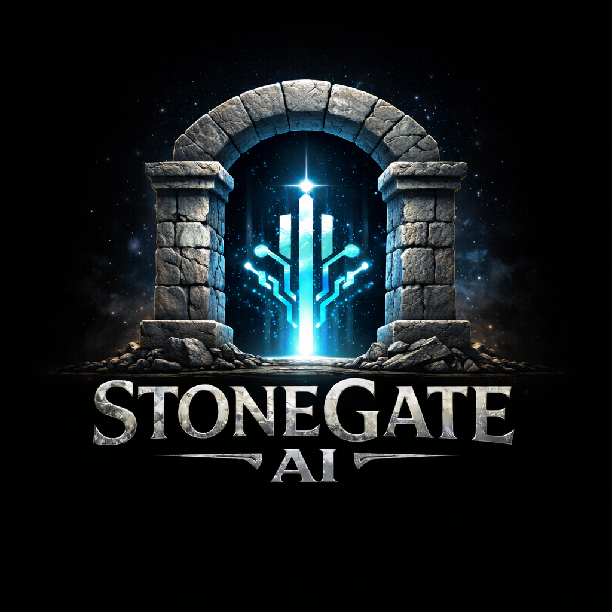

Stone Gate AICoastal Restoration Proposal
A practical operating layer for intake, dispatch, documentation, and follow-up.
What Stone Gate AI Builds
Stone Gate AI automates the workflows that decide whether a service business makes money. For Coastal, the first rollout should focus on the front-end operating layer: intake, dispatch, documentation, and follow-up.
What We Are Solving First
Front-end handoff
- Calls are answered, but the handoff is not always restoration-ready.
- Urgent calls, estimates, and referral handoffs need clearer routing.
- Water/storm opportunity makes triage and dispatch readiness more important.
Operating consistency
- Documentation needs consistent photos, readings, scans, and job-file completeness.
- Referral partners should be captured and tracked cleanly.
- The website issue is a quick credibility repair.
Recommended Path: Growth
Growth at $5,000/month, with the separate setup fee waived for this initial start.
Growth connects the handoff instead of fixing one piece in isolation. It covers the three categories Coastal needs first: Sales / Lead Intake, Operations / Dispatch, and Service Delivery / Documentation.
First 5 workflows installed first
- Emergency restoration intake + job packet.
- On-call routing / dispatch handoff.
- Estimate and missed-opportunity follow-up.
- Documentation SOP checklist.
- Referral partner intake / tracking.
During onboarding, the system is measured against Coastal's actual calls, jobs, and follow-up activity.
Package Options
| Path | Scope level | Best fit |
|---|---|---|
| Audit First | Paid workflow leak map before implementation. | Best if Coastal wants certainty before implementation. |
| Recovery $3,000/month |
1 workflow category. First 2 workflows installed first. | Best proof path: emergency intake + dispatch handoff. |
| Growth $5,000/month |
3 workflow categories. First 5 workflows installed first. | Recommended first operating layer for Coastal. |
| Partner $10,000/month + attributable upside |
All 12 categories. | Future path unless Coastal wants the full operating layer now. |
First 30 Days
| Week | Focus |
|---|---|
| Week 1 | Map fields, routing, current tools, and owner rules. |
| Week 2 | Build intake + job packet + dispatch handoff. |
| Week 3 | Add estimate follow-up + documentation SOP checklist. |
| Week 4 | Add referral tracking + KPI baseline + next workflow priorities. |
What Coastal Provides
- Current answering-service handoff format and any scripts or instructions.
- Intake fields Shawn/Tom want captured on restoration calls.
- Routing rules for Shawn, Tom, office queue, and on-call techs.
- Current tools used for calls, calendar, CRM, dispatch, photos, documents, and follow-up.
- Documentation checklist or examples of complete job files.
- Referral partner categories and follow-up preferences.
- Website or hosting contact if Coastal wants the public-trust repair handled.